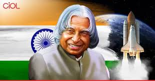

Cricket is a bat and ball game played between two teams of eleven players on a circular field.
I enjoy playing cricket with my friends on weekends. It's a great way to stay active and have fun.
Listening to music is a wonderful way to relax and unwind. I enjoy various genres including pop, rock,etc.
Music has the power to heal the soul.
Solving puzzle games is a great way to challenge my mind and improve my problem-solving skills. I enjoy various types of puzzles, including crosswords, Sudoku, and jigsaw puzzles.
These games provide a sense of accomplishment when I complete them and help me relax after a long day.
Dr. A.P.J. Abdul Kalam
Dr. Avul Pakir Jainulabdeen Abdul Kalam was born on 15 October 1931 in Rameswaram, Tamil Nadu, into a humble family. Despite financial hardships, he was a bright student and showed a keen interest in science and mathematics from a young age.
Dr. Kalam became one of India’s most respected scientists and served as the 11th President of India (2002–2007). Known as the ,"Missile Man of India", he played a key role in India’s space and missile development programs, including Agni and Prithvi missiles. He was also a key figure in the Pokhran-II nuclear tests in 1998.
Dr. Kalam was awarded the Bharat Ratna, India’s highest civilian honor, in 1997. He inspired millions of students with his vision, humility, and words: “Dream, dream, dream. Dreams transform into thoughts and thoughts result in action.”
I wake up at 6:30 AM and start my day with a glass of warm water. Then I go for a walk or do some light exercise. After that, I take a shower and watch a phone.
In the afternoon, I attend lectures and work on assignments. I usually have lunch around 11:00 AM. After classes, I take a short nap or revise what I learned.
Evenings are for relaxation and hobbies. I read books, sometimes watch videos on YouTube, and spend time with family. I finish dinner by 8:00 PM and go to bed around 10:30 PM.